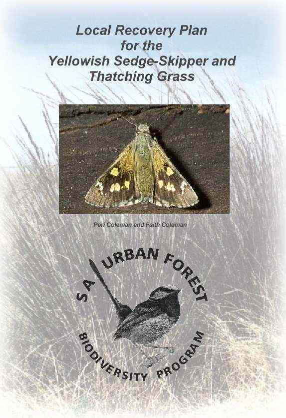

|  | Coleman, PSJ and FS Coleman (2000) Local Recovery Plan for the Yellowish Sedge-Skipper and Thatching Grass, Delta Environmental Consulting, Adelaide. ISBN 0 646 39327 8 This document is a large Adobe Portable Document. It will take some time to download. Please be patient. You need a copy of Adobe Reader to view this file. You may obtain one free of charge from Adobe |
Return to Urban Forest Biodiversity
Return to Delta Environmental Consulting